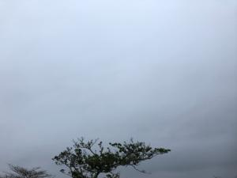
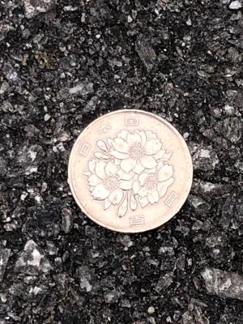
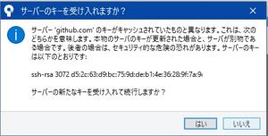
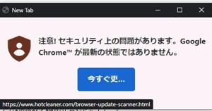

うるがいの話 ある日
最新: 落ちた百円【うるがいの話 ある日】とは 一日だけのプログです
『うるがいの話』の最新一日だけのプログで、通信料が少なく経済的だ。カニの画像をクリックすると全ての日付が載る『うるがいの話』サイトを表示します
|
|
【うるがいの話】 うるがい(ｳﾙｶﾞｲ urugai)とは、『もずくがに』の名前でとても大きくなります。 |
|---|---|
|
|
【カミマヤーの話】 猫のことを方言でマヤーといいます。カミマヤー（kamimayaa）とは、神の猫のことです。 |
|
【たながぁの音楽】 たながぁ（ﾀﾅｶﾞｰ tanagaa）とは手長えびのことで、何種類かあり大きいのは車 エビぐらいになります。 |

|
【ぶながぁの話】 ぶながぁ(ﾌﾞﾅｶﾞｰ bunagaa)とは、赤い髪の毛、赤い身体、そして身長は１ｍ２０ｃｍ ぐらい、川の蟹を食べているの目撃された。場所は沖縄県国頭郡大宜味村のと ある村僕の隣近所に住んでいる爺さんから、聞いた話です。 |
|
|
【ギーマの話】 ギーマ(giima)とは、山原の里山に咲くスズランに似た、 花を付けます。実は食べられます、 気が付くと口の周りが紫になっています。 |
2023年03月26日 (日）落ちた百円
16:49
  
今日、ウォーキングへ行くため近所の通りを歩いていると、おとといから落ち
ていた百円玉が、まだ落ちていた。ウォーキングから帰ってきても、あった。
人通りはそれなりにあると思うのだが、百円だぜ！。このあたりの子供たちが
拾ってお菓子を買う（今時百円で買えなのかも）ことを願う。Ｇｏｏｇｌｅの
プラウザを使っていると、プラウザが最新でないと警告されココを押してくれ
と警告がでる。リンクを押した（本当はダメ！）が、なんの反応もない。ん？
プラウザが最新か確認すると最新だった（都度最新になる設定であった）、オ
オ、ネットで調べるといつもの詐欺とのこと。そして、こともあろうにとある
サイトのページをアップするとＧｉｔから『セキュリテイの危険性があります
』と警告がでた。え、これもかとネットで調べ一応大丈夫みたいなので警告を
無視してアップする。なんと疲れる日常・・・・。

１６時４４分 ビットコインの総資産 ￥１０、４６５（↑２８）